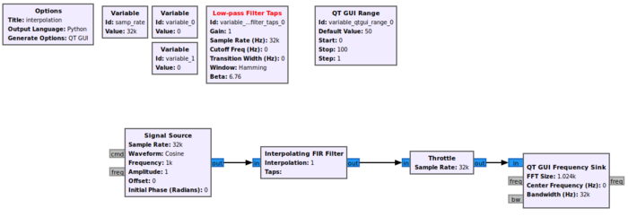

Sample Rate Change by GNURadio

GNURadio 采样率变换：通过插值提高采样率、扩展可用带宽，结合 Rational Resampler 等模块完成重采样。
设计
介绍
插值可以提高采样率，人话：原来 1 秒只有 100 个点 → 插值后变成 1 秒 400 个点
这样可以不太准确的推理，从奈奎斯特来说可用带宽≈采样率的一半。现在通过插值采样率高了，能表示的最高频率自然也就大了。看起来可用带宽就变多了。
具体
我们需要以下block:
- Two Variable bocks
- Low-Pass Filter Taps
- QT GUI Range
- Signal Source
- Interpolating FIR Filter
- Throttle
- QT GUI Frequency Sink
按照以下进行连接：

将两个变量分别设置为
- The First
- Id:interpolation_rate
- Value:4
- The Second
- Id: samp_rate_interpolated
- value: samp_rate*interpolations_rate
编辑Low-Pass Filter Tpas
- Id : lowPassTaps
- Sample Rate: samp_rate_interpolated
- Cutoff Freq: samp_rate_interpolated/(interpolation_rate*2)
- Transition Width: samp_rate_interpolated/(interpolation_rate*4)
设置QT GUI Range
- Id: frequency
- Default Value: 0
- Start: -samp_rate/2
- Stop: samp_rate/2
将Signal Source的Frequency设置为frequency
设置Interpolating FIR Filter block
- Interpolation: interpolation_rate
- Taps: lowPassTaps
设置Throttle
- Sample Rate: samp_rate_interpolated
设置QT GUI Frequency Sink
Interpolation
- 提高采样率—-> 扩大可用带宽
- 使用Interpolating FIR Filter模块进行实现。
关键步骤：
- 使用Low-Pass Filter Taps生成匹配插值倍数的抗镜像滤波器
- 插值后的采样率= 源采样率 * 插值倍数
- 滤波器的作用： 滤除插值产生的频谱镜像
效果：采样率变高，波形更平滑，频谱展示范围更大。
Interpolating它把插值与低通滤波的活都干了，它是天生绑定的。